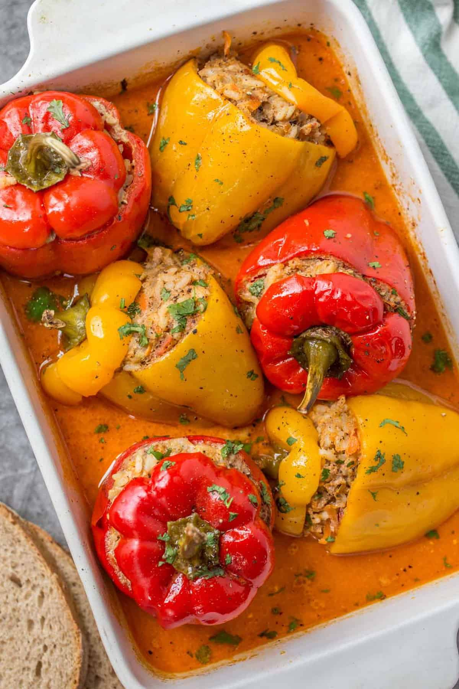

Stuffed Peppers

Description:
A classic recipe for Stuffed Bell Peppers stuffed filled with meat, rice, and sauteed vegetables then baked in a delicious sauce. This classic recipe is so easy to make and comfort food at its finest.
Ingredients:
- Bell Peppers(yellow, red and green)
- White or Brown Rice
- Shredded Sharp Sheddar
- Onions
- 5 chicken breats
- Tomatoes
- A single can of Tomato Sauce
- Salt
- Black Beans
- Black Pepper
- Paprika
- Garlic
- Meat thermometer
- Tomato Sauce
- Jalapenos
- butter
- Cilantro
- lime
- Coconut milk
- Olive Oil
Steps
- Pre-heat oven to 375
- Cut the tops of Bell peppers and clean out any seeds
- Cut the core out of the the bell peppers
- Once the oven is warm, put the bell peppers in on a sheet pan for 10 minutes to soften them before stuffing
- take them out after 10 minutes
- Keep the oven on but turn it up to 400 degrees
- Measure 1 cup of rice, pour it in the pot and rinse thoroughly until the water is clear
- Fill a pot with water and bring it to a boil.
- Once the water begins to boil place a lid over the pot and turn the heat to low. Let it simmer for about 10-15 minutes
- Rinse chicen with cold water and scrub them with lime
- Season chicken and place in the over to cook for about 30 minutes. Regularly check the chicken temperature for 165 degrees
- While waiting chop up 1 whole white onion,1 head of cilantro, 2 Jalapenos, 1 tomatoe and 4 garlic cloves
- Pour some oil in a skillet and wait until it heats.
- As it heats put the onions, cilantro, jalapenos, tomatoe and garlic cloves
- Let them carmalize in the pot
- Once they give off a brownish color pour in 1 cup of coconut milk.
- Pour the can of tomato sauce in.
- Season the sauce with Salt, Pepper and Paprika
- Once it begins to bubble turn the sauce on low and begin to add the shredded cheese starting with a cup and add more as seen fit
- Stir the cheese in as you add it.
- Take the chicken out,place it into a bowl and begin to shred it with two forks.
- Add all of the shredded chicken into the sauce and stir it as you add it.
- Add the rice to the sauce as well and stir it.
- one Everything is added you can use tongs or a ladel to put the mix into the Bell Peppers (stuff to the brim).
- Add cheese to the top of each Bell Peppers
- Place the bell peppers back in the oven for about 10 minutes
- At the 10 minute mark turn the oven to broil and leave them in for another 2-3 minutes.
- Take them out, let them cool for 10 minutes and Enjoy!